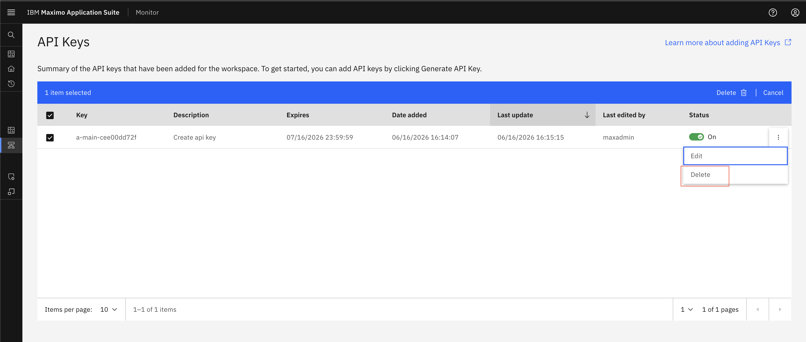
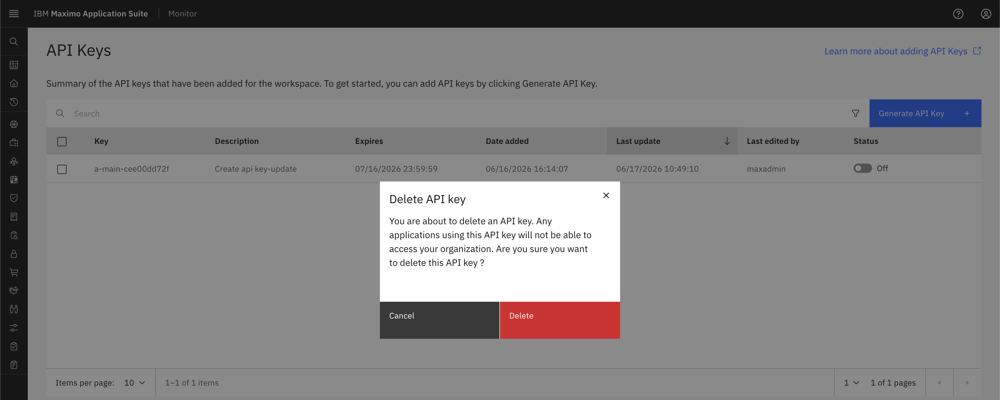
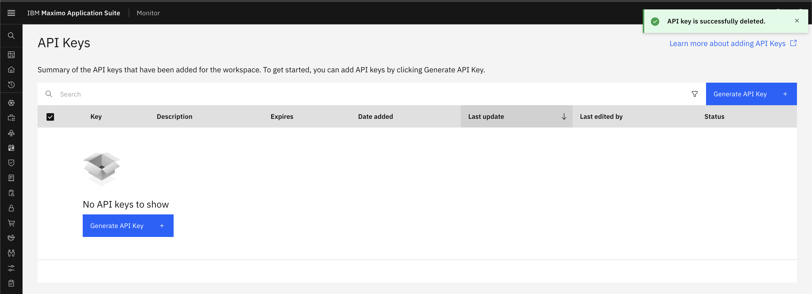

Delete API Key
Prerequisites
Before starting this exercise, ensure you have:
- Access to Maximo Monitor
Steps
- Open
Maximo Application Suiteand selectMonitor Application. - Expand
SetupunderMonitorand SelectAPI Keys (Monitor) - Locate the API key you want to delete in the list
- Click on the API key row to select it
- Click the
Deletebutton or icon (typically represented by a trash can icon)
- A confirmation dialog will appear asking you to confirm the deletion
- Review the API key details one final time to ensure you're deleting the correct key

- Click
Deleteto permanently remove the API key - The API key will be immediately removed from the system and can no longer be used for authentication

Verification
After deleting the API key, verify that:
- The API key no longer appears in the API Keys list
- Any test API calls using the deleted key return authentication errors
- Dependent systems have been updated with new credentials (if applicable)
Best Practices
Tip
- Audit before deletion: Review API key usage logs before deleting
- Rotate instead of delete: Consider generating a new key and updating integrations before deleting the old one
- Document deletions: Keep a record of when keys were deleted and why
- Use expiry dates: Set expiry dates on keys instead of manual deletion when possible
Critical
Before deleting an API key, verify that:
- No active integrations are using this key
- You have documented which systems were using this key
- You have a backup plan for any affected services
- You have notified relevant stakeholders about the deletion
Next Steps
After deleting your API key, you may want to:
- Generate a new API Key if you need to replace the deleted one
- Review IoT Security best practices